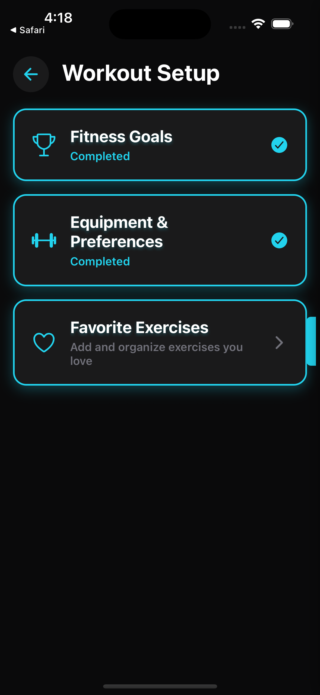
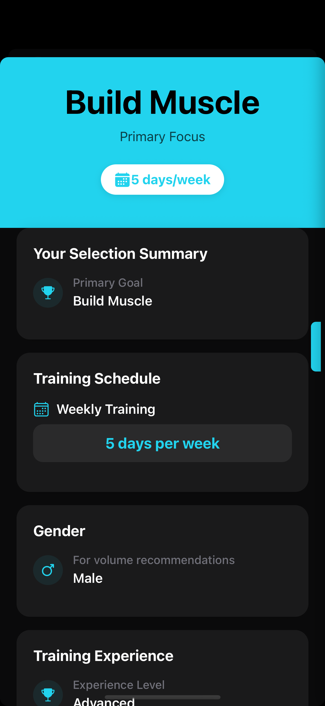
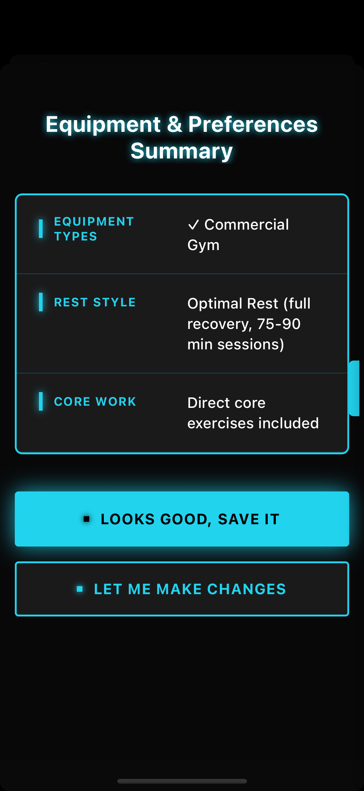
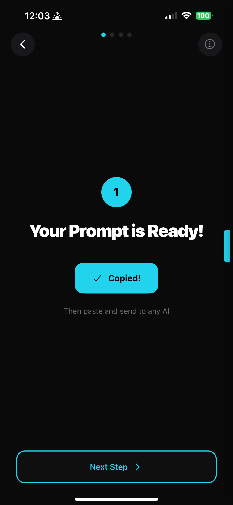
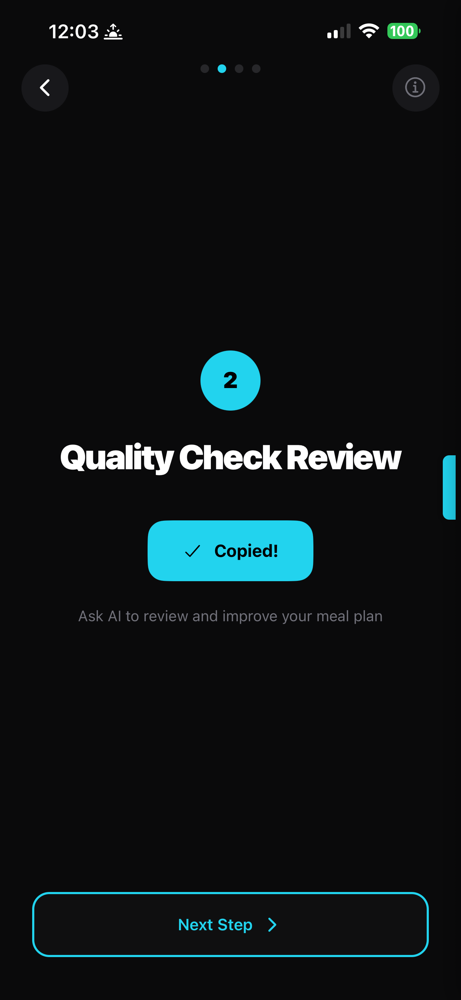
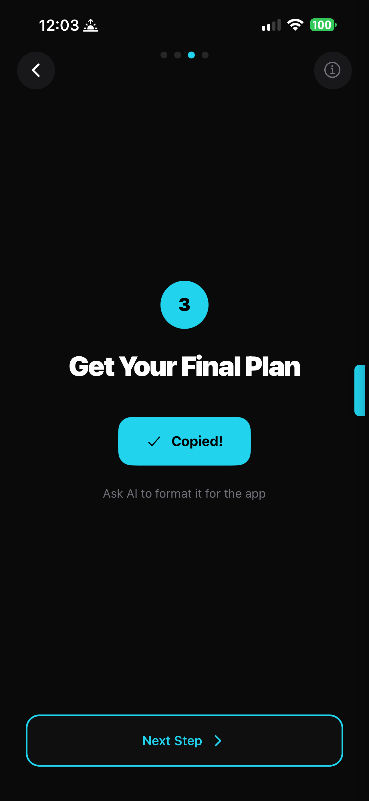
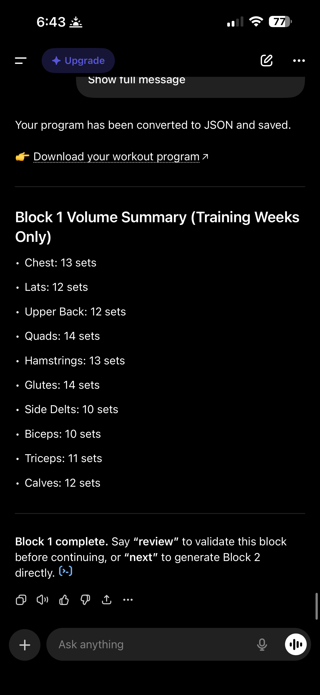
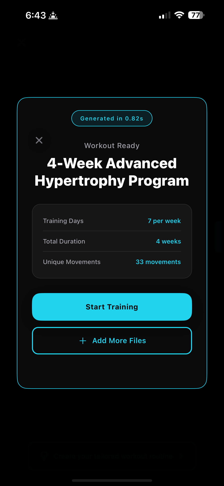
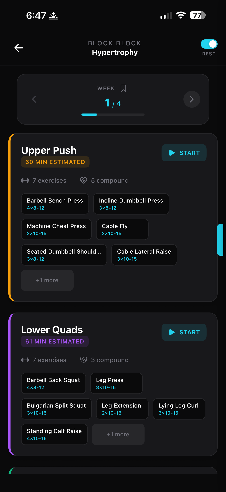
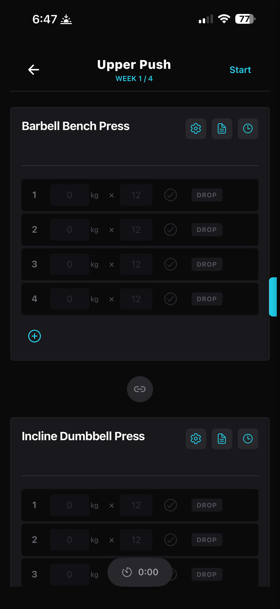

How to Generate a 12-Week Hypertrophy Program with ChatGPT
Most AI workout plan generators charge you $15–20/month for the privilege of using AI that you already have access to. If you're paying for ChatGPT Plus — or even using the free tier — you can generate a fully personalised hypertrophy program and have it ready to track in the app.
This tutorial walks through the entire process: setting up your profile, running the 3-step prompt pipeline, and importing the finished program so every set, rep, and weight is ready to track.
What you'll need
- JSON.fit — free on the App Store (workout imports are completely free, no ads)
- ChatGPT — free tier works fine, Plus is slightly better for longer programs
Step 1: Set up your profile
Open JSON.fit and head to the workout setup. The app asks you a series of questions about your training — nothing complicated, just the basics that any good program needs:
- Your training goal (hypertrophy, strength, general fitness)
- How many days per week you can train
- Your experience level and gender (for volume recommendations)
- Equipment access (commercial gym, home gym, minimal equipment)
- Rest style, core work preferences, and favourite exercises



The app takes your answers and constructs a detailed, structured prompt behind the scenes. You don't need to know how to write a good AI prompt — the app handles that for you.
Step 2: The 3-step prompt system
Just like the nutrition side, JSON.fit uses a 3-step prompt pipeline for workouts to make sure the program is properly structured before you import it:
Prompt 1 — Generate the program. The app builds a detailed prompt from your setup answers. You copy it and paste it into ChatGPT. The AI generates a full workout program with exercises, sets, reps, rest times, and progressive overload.
Prompt 2 — Quality check. A second prompt asks the AI to review its own program — checking volume distribution per muscle group, exercise selection, progressive overload logic, and whether the program matches your stated preferences.
Prompt 3 — Format for import. A third prompt converts the reviewed program into JSON format that JSON.fit can parse. Every exercise, set, and rep is structured into a clean file ready for import.



Each step is just a tap to copy and a paste into ChatGPT. The app walks you through the entire process.
Step 3: ChatGPT does the work
After the third prompt, ChatGPT produces a complete workout program in JSON format. It also gives you a volume summary showing weekly sets per muscle group — so you can verify the program is properly balanced before importing.

A note on AI quality: ChatGPT-4o tends to produce the most detailed programs with better exercise selection. The free tier works perfectly well for standard programs. Claude is excellent at following the JSON structure precisely. Gemini is fast. They all produce usable programs.
Step 4: Import in under a second
Copy the JSON file from ChatGPT, go back to JSON.fit, and paste. The app validates everything and builds your program instantly. In this example, a 4-week advanced hypertrophy program with 33 unique movements imported in 0.82 seconds.

Step 5: Your program, ready to train
Your entire program is loaded with every block, week, and training day laid out. You can see the training split, browse each week, and drill into individual workouts to see every exercise with target sets and reps.


Step 6: Train and track
Tap into any workout day and you're in the logging view. Every exercise has target sets and reps pre-filled. Enter your weight, hit the checkmark, and move on. The app tracks everything across the full program.

Why this approach works
The program ChatGPT generates isn't a generic template. Because the prompt includes your specific training days, experience level, equipment access, and goals, the output is genuinely personalised. And the 3-step pipeline means the AI reviews its own work before you ever see the final result. It handles things like:
- Volume distribution — appropriate sets per muscle group per week based on your experience level
- Progressive overload — planned rep/weight increases across the mesocycle
- Exercise selection — compound and isolation movements matched to your equipment and preferences
- Deload weeks — programmed recovery phases at appropriate intervals
- Training split — push/pull/legs, upper/lower, full body, or whatever fits your schedule
Is it as good as a program from a world-class coach who's been working with you for months? Probably not. Is it better than what 95% of people in the gym are doing — following random workouts from Instagram or running the same routine for years? Absolutely.
Not happy with the result? Regenerate for free.
One of the advantages of this approach: if you don't like the program, just go back to ChatGPT and ask it to adjust. Want more hamstring volume? Ask. Prefer barbell movements over dumbbells? Ask. Want to switch from a 4-day to a 5-day split? Ask. Then re-import.
With a traditional fitness app, you're stuck with whatever their algorithm gives you — or you pay extra for "custom" adjustments. Here, you just talk to the AI in plain English and try again. No extra cost.
Want to see how the nutrition side works? Read the meal plan tutorial →
Ready to build your program?
Download JSON.fit — free on the App Store